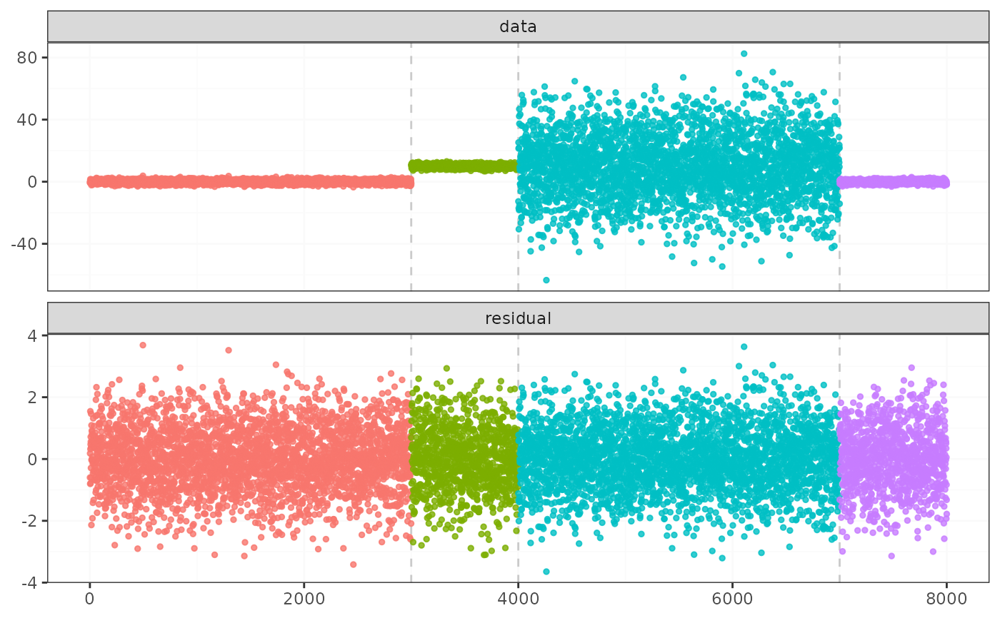

Find change points efficiently in mean variance change models
Source:R/fastcpd_wrappers.R
fastcpd_meanvariance.Rdfastcpd_meanvariance(), fastcpd.meanvariance(),
fastcpd_mv(), fastcpd.mv() are wrapper
functions of fastcpd() to find the meanvariance change. The
function is similar to fastcpd() except that the data is by
default a matrix or data frame or a vector with each row / element as an
observation and thus a formula is not required here.
Usage
fastcpd_meanvariance(data, ...)
fastcpd.meanvariance(data, ...)
fastcpd_mv(data, ...)
fastcpd.mv(data, ...)Arguments
- data
A matrix, a data frame or a vector.
- ...
Other arguments passed to
fastcpd(), for example,segment_count.
Value
A fastcpd object.
Examples
set.seed(1)
p <- 1
result <- fastcpd.meanvariance(c(
rnorm(300, 0, 1),
rnorm(400, 10, 1),
rnorm(300, 0, 10),
rnorm(300, 0, 1),
rnorm(400, 10, 1),
rnorm(300, 10, 10)
))
summary(result)
#>
#> Call:
#> fastcpd.meanvariance(data = c(rnorm(300, 0, 1), rnorm(400, 10,
#> 1), rnorm(300, 0, 10), rnorm(300, 0, 1), rnorm(400, 10, 1),
#> rnorm(300, 10, 10)))
#>
#> Change points:
#> 300 700 1001 1300 1700
#>
#> Cost values:
#> -5.890901 26.91692 720.0313 17.3074 2.232584 724.8531
#>
#> Parameters:
#> segment 1 segment 2 segment 3 segment 4 segment 5 segment 6
#> 1 0 0 0 0 0 0
#> 2 0 0 0 0 0 0
plot(result)

if (requireNamespace("mvtnorm", quietly = TRUE)) {
set.seed(1)
p <- 3
result <- fastcpd.mv(
rbind(
mvtnorm::rmvnorm(600, mean = rep(0, p), sigma = diag(1, p)),
mvtnorm::rmvnorm(800, mean = rep(100, p), sigma = diag(1, p)),
mvtnorm::rmvnorm(600, mean = rep(0, p), sigma = diag(900, p)),
mvtnorm::rmvnorm(600, mean = rep(0, p), sigma = diag(1, p)),
mvtnorm::rmvnorm(800, mean = rep(100, p), sigma = diag(1, p)),
mvtnorm::rmvnorm(600, mean = rep(100, p), sigma = diag(900, p))
)
)
summary(result)
}
#>
#> Call:
#> fastcpd.mv(data = rbind(mvtnorm::rmvnorm(600, mean = rep(0, p),
#> sigma = diag(1, p)), mvtnorm::rmvnorm(800, mean = rep(100,
#> p), sigma = diag(1, p)), mvtnorm::rmvnorm(600, mean = rep(0,
#> p), sigma = diag(900, p)), mvtnorm::rmvnorm(600, mean = rep(0,
#> p), sigma = diag(1, p)), mvtnorm::rmvnorm(800, mean = rep(100,
#> p), sigma = diag(1, p)), mvtnorm::rmvnorm(600, mean = rep(100,
#> p), sigma = diag(900, p))))
#>
#> Change points:
#> 600 1400 2003 2600 3400
#>
#> Cost values:
#> 98.15034 113.8909 6155.912 68.40162 -17.3152 6146.93
#>
#> Parameters:
#> segment 1 segment 2 segment 3 segment 4 segment 5 segment 6
#> 1 0 0 0 0 0 0
#> 2 0 0 0 0 0 0
#> 3 0 0 0 0 0 0
#> 4 0 0 0 0 0 0
#> 5 0 0 0 0 0 0
#> 6 0 0 0 0 0 0
#> 7 0 0 0 0 0 0
#> 8 0 0 0 0 0 0
#> 9 0 0 0 0 0 0
#> 10 0 0 0 0 0 0
#> 11 0 0 0 0 0 0
#> 12 0 0 0 0 0 0
# \donttest{
set.seed(1)
data <- c(rnorm(2000, 0, 1), rnorm(2000, 1, 1), rnorm(2000, 1, 2))
(result_time <- system.time(
result <- fastcpd.meanvariance(data, r.progress = FALSE, cp_only = TRUE)
))
#> user system elapsed
#> 0.009 0.000 0.009
result@cp_set
#> [1] 2032 4003
# }
# \donttest{
set.seed(1)
data <- c(rnorm(2000, 0, 1), rnorm(2000, 1, 1), rnorm(2000, 1, 2))
(result_time <- system.time(
result <- fastcpd.meanvariance(
data, beta = "BIC", cost_adjustment = "BIC",
r.progress = TRUE, cp_only = TRUE
)
))
#> user system elapsed
#> 0.375 0.000 0.374
result@cp_set
#> [1] 2002 4000
# }